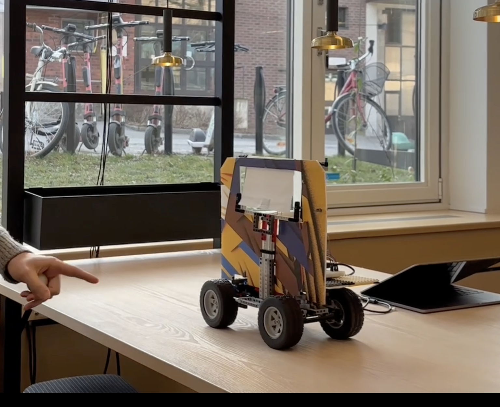

Selected Projects
Tennis Ball Physics Simulation
Problem: Model the physical behavior of a tennis ball including gravity, spin, aerodynamics, and realistic bounce dynamics.
What I did: Implemented a full physics simulation in Unity without relying on built-in mechanics. Used Euler integration to update motion, modeled drag and Magnus lift based on velocity and spin, and implemented bounce behavior using friction and restitution. Added a system to control spin (topspin, backspin, sidespin) via a dropdown interface.
Outcome: The simulation produces realistic trajectories that clearly demonstrate how spin affects motion. The project strengthened my understanding of numerical methods, force modeling, and physical systems.
Links: GitHub

SoundGuessr — Audio-based GeoGuessr Alternative
Problem: Design a GeoGuessr-inspired game where players rely on sound as well as visuals to guess geographic locations.
What I did: Worked primarily on the backend and core game logic. Implemented audio playback, round flow, and API logic in combination with Google Maps, achieving a robust architecture in accordance with industry best practices in React. Also contributed to user input handling and feedback mechanisms. Focused on keeping interactions fast and intuitive while coordinating closely with the team.
Outcome: The final result was a fully playable web application where sound acts as the main information channel. The project demonstrated how audio-only cues can create engaging gameplay, while also highlighting challenges related to audio handling, timing, and user feedback in web environments.
Music Genre Classifier
Problem: Automatically classify music into genres based on audio features.
What I did: Extracted features such as MFCCs, spectral centroid, and tempo from audio data. Trained and evaluated multiple ML models (including Random Forest and LDA) and compared their performance using accuracy and confusion matrices.
Outcome: The project provided hands-on insight into feature engineering, model selection, and the limitations of genre classification due to overlapping musical characteristics. Best accuracy achieved was 67.4% across 6 different genres.
Links: Report (PDF) Source Code (.py)
Interactive Ping Pong Sensor System
Problem: Explore how physical interaction and sensor data can be translated into meaningful feedback in an interactive system.
What I did: Designed and implemented a two-node system using multiple sensors and actuators. One node generated physical events, while the second independently measured hits, force, and timing using pressure sensors and an accelerometer. Data was visualized and mapped to audio feedback.
Outcome: The project highlighted challenges in sensor noise, real-time responsiveness, and meaningful data mapping. Iterative testing led to improved signal stability and clearer feedback for users. (My friend David in the demo)
Links: Report (PDF)
